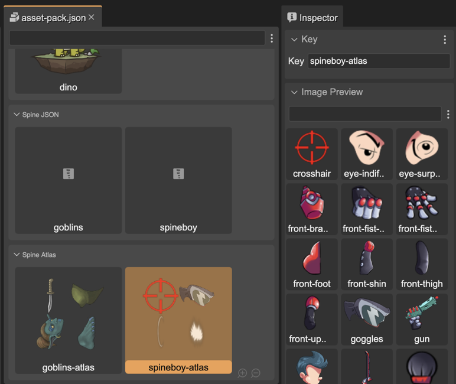
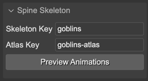
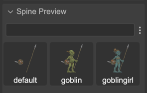
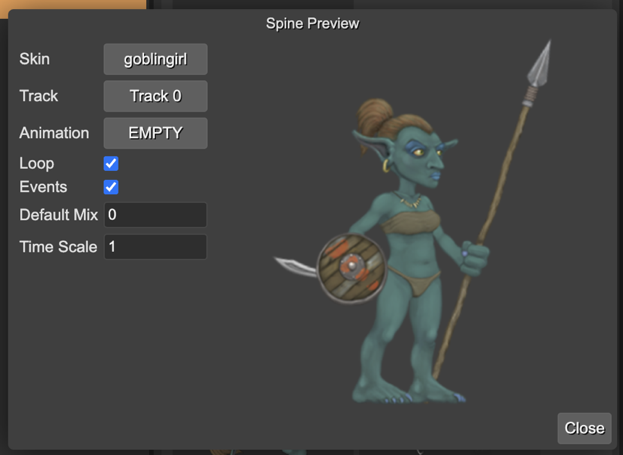
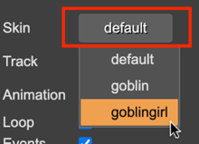
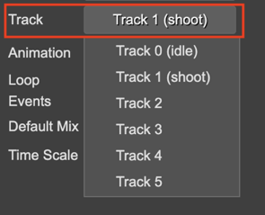
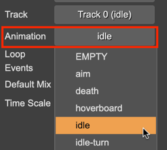
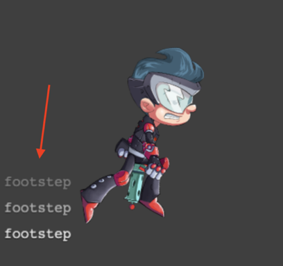

Spine assets preview
There are different contexts in Phaser Editor 2D where there are Spine assets and you can preview them: in the Asset Pack Editor and the Blocks view of the Scene Editor.
For displaying and inspecting Spine objects, the Spine Phaser runtime requires the skeleton data file and the atlas files. If you follow the default Spine assets naming rules, then Phaser Editor 2D can build the skeleton instances and preview them.
In the next sections we explain it in details.
Preview Spine atlas assets
The Asset Pack Editor shows the Spine atlas assets you add to an Asset Pack file. If you select it in the editor, the Inspector view shows you all the atlas frames:
Preview Spine skeleton and animation data
You can select a Spine skeleton data in the Asset Pack Editor or the Blocks view of the Scene Editor. In both cases, the Inspector view shows two sections of properties: the Spine Skeleton and the Spine Preview.
The Spine Skeleton shows the Skeleton Key and Atlas Key:
The Spine Preview section displays the skins defined in the skeleton data:
Preview Spine animations
Notice the Spine Skeleton section contains a Preview Animations button. It opens the Spine Preview dialog.
In this dialog, you can play the skeleton animations and change other properties like the skin.
Let’s go parameter by parameter.
Skin preview
You can change the preview skin by pressing in the Skin button:
Animation and Track
With Spine you can play simultaneous animations on different tracks. With the Track button you can select the track ID for playing the animation you select in the Animation button.
In the next image, you can see it is playing the idle animation in Track 0, and the shoot animation in Track 1.
When you select an animation in the Animation button, it plays it immediately on the selected track:
The animation is played in a loop if the Loop parameter is checked.
If the Events parameter is checked, then the canvas shows the name of the events the animation emits. Look in this image the footstep events:
Also, you can set the Default Mix and Time Scale of the animation. The Default Mix is applied when you change from one animation to another.
Learn more about applying animations in the Spine Phaser runtime